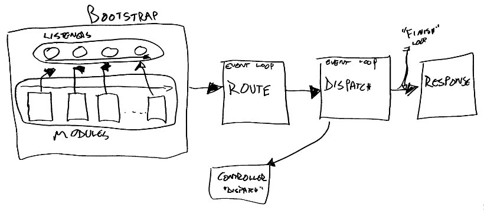
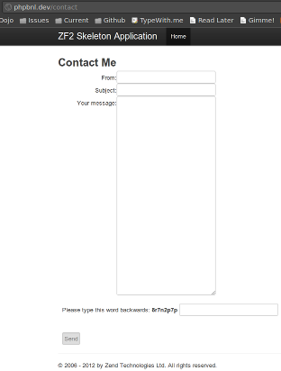

Community has helped us identify the problems of ZF1, and also proposed and provided solutions we're now using and incorporating into ZF2. We've had close to 300 people make direct commits to ZF1, and close to 100 collaborators on ZF2 already. Our direction is now being driven by community proposals, IRC meetings, and voting.
We're using namespaces, autoloading, closures, late static binding, functors, all the yumminess of SPL, even goto
The HTTP specification is full of goodies, and we leverage it and code to it with a redesigned HTTP component. This includes full encapsulation of HTTP methods, headers, cookies, and more, and becomes the core of our new MVC layer.
Singletons, Registries, and Hard-Coded Dependencies
The main entry point to a ZF1 app was a singleton, Zend_Controller_Front. Registries have long been promoted as a way to access dependencies, and are the primary way i18n/l10n work. Controllers typically instantiated objects they needed directly. It's a mess.
Aspect Oriented Design and Dependency Injection
The two biggest questions as we've worked on ZF2 have centered around how controllers could get their dependencies, and how to make systems flexible. Tasks like logging, caching, and authorization should be simple to initiate.
Dependency Injection is not magic.
1 <?php
2 class Bar {}
3
4 class Foo
5 {
6 protected $bar;
7
8 public function __construct(Bar $bar)
9 {
10 $this->bar = $bar;
11 }
12 }
Sometimes we use setters.
1 <?php
2 class Foo
3 {
4 protected $bar;
5
6 public function setBar(Bar $bar)
7 {
8 $this->bar = $bar;
9 }
10 }
1 <?php
2 $definition = array(
3 'Foo' => array(
4 'setBar' => array(
5 'bar' => array(
6 'type' => 'Bar',
7 'required' => true,
8 ),
9 ),
10 ),
11 );
1 <?php
2 use Zend\Di\Di,
3 Zend\Di\Configuration;
4
5 $di = new Di;
6 $config = new Configuration(array(
7 'definition' => array('class' => $definition)
8 ));
9 $config->configure($di);
10
11 $foo = $di->get('Foo'); // contains Bar!
1 <?php
2 return array('di' => array('instance' => array(
3 'Cache\Adapter\Memcached' => array('parameters' => array(
4 'options' => 'Cache\Adapter\MemcachedOptions',
5 )),
6
7 'Cache\Adapter\MemcachedOptions' => array('parameters' => array(
8 'options' => array(
9 'namespace' => 'cache_listener',
10 'ttl' => 60 * 60 * 24 * 7, // 1 week
11 'server' => '127.0.0.1',
12 'port' => 11211,
13 'compression' => true,
14 'binary_protocol' => true,
15 'no_block' => true,
16 'connect_timeout' => 100,
17 'serializer' => 3, // JSON
18 ),
19 )),
20 )));
Annotation support is primarily to make interface injection possible.
All similar concepts, with different nuances.
1 <?php
2 use Zend\EventManager\EventManager;
3
4 $events = new EventManager();
5
6 $events->attach('do', function($e) {
7 $event = $e->getName();
8 $params = $e->getParams();
9 printf(
10 'Handled event "%s", with parameters %s',
11 $event,
12 json_encode($params)
13 );
14 });
15
16 $params = array('foo' => 'bar', 'baz' => 'bat');
17 $events->trigger('do', null, $params);
Priority allows doing pre/post style hooks
1 <?php
2 $events->attach('do', $callback); // base priority
3 $events->attach('do', $callback, 100); // high priority
4 $events->attach('do', $callback, -100); // low priority
Typically:
1 <?php
2 // instance method
3 public function foo($bar, $baz)
4 {
5 $params = compact('bar', 'baz');
6 $this->events()->trigger('do', $this, $params);
7 }
1 <?php
2 interface EventDescription
3 {
4 public function setName($name);
5 public function setTarget($target);
6 public function setParams($params);
7 public function getName();
8 public function getTarget();
9 public function getParam($name, $default = null);
10 public function getParams();
11 }
Listeners receive an Event as their sole argument.
Listeners can be any valid PHP callback.
1 <?php
2 function ($e) {
3 $event = $e->getName();
4 $target = $e->getTarget();
5 $target = (is_object($target)
6 ? get_class($target)
7 : gettype($target))
8 $params = $e->getParams();
9 printf(
10 'Event "%s", params %s, target "%s"',
11 $event,
12 json_encode($params),
13 $target
14 );
15 }
1 <?php
2 $callback = function($e) {
3 $result = $e->getParam('__RESULT__');
4 $matches = $e->getParam('route-match');
5 // ...
6 };
1 <?php
2 $callback = function($e) {
3 $result = $e->getResult();
4 $matches = $e->getRouteMatch();
5 // ...
6 };
Easiest is to simply extend Zend\EventManager\Event:
1 <?php
2 use Zend\EventManager\Event;
3
4 class MyEvent extends Event
5 {
6 protected $result;
7
8 public function setResult($result)
9 {
10 $this->setParam('result', $result);
11 }
12
13 public function getResult()
14 {
15 return $this->getParam('result');
16 }
17 }
Using built-in parameters makes martialling easier.
Pass as sole parameter:
1 <?php
2 $event = new MyEvent();
3 $event->setName('foo');
4 $event->setTarget($this);
5
6 $events->trigger($event);
Pass as second parameter:
1 <?php
2 $event = new MyEvent();
3 $event->setTarget($this);
4
5 $events->trigger('foo', $event);
Pass as third parameter:
1 <?php
2 $event = new MyEvent();
3
4 $events->trigger('foo', $this, $event);
1 <?php
2 use Zend\EventManager\EventCollection,
3 Zend\EventManager\EventManager;
4 class Foo
5 {
6 protected $events;
7 public function setEventManager(EventCollection $events)
8 {
9 $this->events = $events;
10 }
11 public function events()
12 {
13 if (!$this->events) {
14 $this->setEventManager(new EventManager(array(
15 __CLASS__, get_called_class(),
16 ));
17 }
18 return $this->events;
19 }
20 }
This would make a great Trait
1 <?php
2 class Foo
3 {
4 // ...
5
6 public function bar($baz, $bat = null)
7 {
8 $params = compact($baz, $bat);
9 $this->events()->trigger(__FUNCTION__, $this, $params);
10 }
11 }
Examples might be composing object collaborators
Example includes view listener in ZF2 - views, layouts, error pages
1 <?php
2 class LogEvents implements ListenerAggregate
3 {
4 protected $handlers = array();
5 protected $log;
6
7 public function __construct(Logger $log)
8 {
9 $this->log = $log;
10 }
11
12 public function log(Event $e)
13 {
14 $event = $e->getName();
15 $params = $e->getParams();
16 $log->info(sprintf('%s: %s', $event, json_encode($params)));
17 }
18
19 // ...
20 }
1 <?php
2 public function attach(EventCollection $events)
3 {
4 $this->handlers[] = $events->attach('do', array($this, 'log'));
5 $this->handlers[] = $events->attach('doSomethingElse', array($this, 'log'));
6 }
7
8 public function detach(EventCollection $events)
9 {
10 foreach ($this->handlers as $key => $handler) {
11 $events->detach($handler);
12 unset($this->handlers[$key];
13 }
14 $this->handlers = array();
15 }
1 <?php
2 $logEvents = new LogEvents($logger);
3 $events->attach($logEvents);
4
5 // or
6 $logEvents->attach($events);
Use the StaticEventManager.
1 <?php
2 use Zend\EventManager\StaticEventManager;
3 $events = StaticEventManager::getInstance();
4 $events->attach($context, $event, $callback);
setIdentifier()1 <?php
2 use Zend\EventManager\StaticEventManager;
3 $events = StaticEventManager::getInstance();
4 $events->attach('Foo', 'bar', function ($e) {
5 $event = $e->getName();
6 $target = $e->getTarget();
7 $params = json_encode($e->getParams());
8 sprintf('%s::%s: %s', $event, $target, $params);
9 });
Method 1: Attach a callback when triggering
1 <?php
2 $results = $events->trigger($event, function($r) {
3 return ($r instanceof Response);
4 });
Method 2: Signal from a listener
1 <?php
2 $listener = function ($e) {
3 $e->stopPropagation(true);
4 };
This is like JavaScript
1 <?php
2 $results = $events->trigger(/* ... */);
3 if ($results->stopped()) {
4 return $results->last();
5 }
1 <?php
2 foreach ($results as $result) {
3 // ...
4 }
1 <?php
2 $first = $results->first();
1 <?php
2 $first = $results->last();
1 <?php
2 if ($results->contains('foo')) {
3 // found!
4 }
Sometimes events need to execute in a given order.
Examples: ACLs, caching
1 <?php
2 // High priority:
3 $events->attach('foo', $listener, 100);
4
5 // Low priority:
6 $events->attach('foo', $listener, -100);
1 <?php
2 public function someExpensiveCall($criteria1, $criteria2)
3 {
4 $params = compact('criteria1', 'criteria2');
5 $results = $this->events()->trigger(
6 __FUNCTION__ . '.pre', $this, $params, function ($r) {
7 return ($r instanceof SomeResultClass);
8 });
9 if ($results->stopped()) {
10 return $results->last();
11 }
12
13 // ... do some work ...
14
15 /* $params['__RESULT__'] = $calculatedResult; */
16 $this->events()->trigger(
17 __FUNCTION__ . '.post', $this, $params);
18 return $calculatedResult;
19 }
1 <?php
2 $events->attach('someExpensiveCall.pre', function($e) use ($cache) {
3 $params = $e->getParams();
4 $key = md5(json_encode($params));
5 if (false !== ($hit = $cache->load($key)) {
6 return $hit;
7 }
8 }, 100);
1 <?php
2 $events->attach('someExpensiveCall.post', function($e) use ($cache) {
3 $params = $e->getParams();
4 $result = $params['__RESULT__'];
5 unset($params['__RESULT__']);
6 $key = md5(json_encode($params));
7 $cache->save($result, $key);
8 }, -100);
Use the EventManager. It's powerful. It's the basis of our Application architecture.
I'm going to show you the MVC from the inside out, using a flow diagram to detail how it works.

1 <?php
2 namespace Zend\Stdlib;
3
4 interface Dispatchable
5 {
6 public function dispatch(
7 RequestDescription $request,
8 ResponseDescription $response = null);
9 }
It's so simple and obvious. It can be used by servers to accept requests and return responses, or by clients, to send requests, and parse responses.
One thing interesting about the MVC is that because the same base is used for server classes and general Strategies or Commands, these, too, can be attached to the MVC directly, with little or no extra overhead.
1 <?php
2 namespace Foo\Controller;
3
4 use Zend\Stdlib\Dispatchable,
5 Zend\Stdlib\RequestDescription as Request,
6 Zend\Stdlib\ResponseDescription as Response;
7
8 class MyController implements Dispatchable
9 {
10 public function dispatch(
11 Request $request, Response $response = null
12 ) {
13 // do something and return a Response object
14 }
15 }
1 <?php
2 namespace Foo\Controller;
3
4 use Zend\Mvc\Controller\ActionController;
5
6 class HelloController extends ActionController
7 {
8 public function worldAction()
9 {
10 $routeMatch = $this->getEvent()->getRouteMatch()
11 $post = $this->request->post();
12 return array(
13 'target' => $routeMatch->getParam('target'),
14 'message' => $post->get('message', 'Nobody'),
15 );
16 }
17 }
1 <?php
2 namespace Foo\Controller;
3
4 use Zend\Mvc\Controller\ActionController,
5 Zend\View\Model\ViewModel;
6
7 class HelloController extends ActionController
8 {
9 public function worldAction()
10 {
11 $routeMatch = $this->getEvent()->getRouteMatch()
12 $post = $this->request->post();
13 return new ViewModel(array(
14 'target' => $routeMatch->getParam('target'),
15 'message' => $post->get('message', 'Nobody'),
16 ), array(
17 'template' => 'foo/hello',
18 );
19 }
20 }
1 <?php
2 $request->query(); // $_GET
3 $request->post(); // $_POST
4 $request->env(); // $_ENV
5 $request->server(); // $_SERVER
6 $request->file(); // $_FILES
7 $request->cookie(); // $_COOKIE
8 $request->uri(); // URI object
9 $request->headers(); // headers
1 <?php
2 $response->setStatusCode($code); // Status
3 $response->headers(); // headers
4 $response->setContent($content); // body
1 <?php
2 $headers->addHeaderLine($header, $value); // set
3 $headers->has($header); // test
4 $headers->get($header); // get
5 $header->getFieldValue(); // get value
1 <?php
2 $model = new ViewModel();
3 $model->setVariable($name, $value);
4 $model->setVariables($array);
5 $model->getVariables();
6 $model->setOption($name, $value);
7 $model->setOptions($array);
8 $model->getOptions();
JsonViewModelFeedViewModelThe act of matching a Request
to a Controller.
"/contact""/article/:id""/tag/(?<tag>[^/]+)""/*"/blog -- Literal
.xml -- Literal ("/blog.xml")
/(?<id>[^/]+) -- Regex ("/blog/foo")
/tag/(?<tag>[^/.]+) -- Regex ("/blog/tag/foo")
.xml -- Literal ("/blog/tag/foo.xml")
/year/:year -- Segment ("/blog/year/2011")
/month/:year/:month -- Segment ("/blog/month/2011/12")
A matched route MUST return a controller
1 <?php
2 use Zend\Mvc\Router\Http\Regex as RegexRoute;
3 $route = new RegexRoute(
4 '/blog/(?<id>[/.]+)',
5 '/blog/%id%',
6 array(
7 'controller' => 'Blog\Controller\EntryController'
8 )
9 );
Routes return a RouteMatch object on success
1 <?php
2 namespace Zend\Mvc\Router;
3
4 class RouteMatch
5 {
6 public function getMatchedRouteName();
7 public function getParams();
8 public function getParam($name, $default = null);
9 }
What provides us with controllers and routes?
The answer is: modules
I've created a module that simply provided SkeletonCSS in a way that I could easily drop it into a project. I have modules that are basically libraries, and contain source code, unit tests, and documentation. The point is, they can provide just about anything, because the only requirement is the Module class as an entry point.
module/
Foo/
Module.php
Which contains:
1 <?php
2 namespace Foo;
3
4 class Module { }
ModuleName/
autoload_classmap.php
Module.php
config/
module.config.php
public/
css/
images/
js/
src/
ModuleName/
... code ...
test/
ModuleName/
... code ...
view/
... templates, etc. ...
Commonly, we will provide DI and routing configuration.
1 <?php
2 namespace Foo;
3 use Zend\Module\Consumer\AutoloaderProvider;
4 class Module implements AutoloaderProvider
5 {
6 public function getAutoloaderConfig()
7 {
8 return array(
9 'Zend\Loader\ClassMapAutoloader' => array(
10 include __DIR__ . '/autoload_classmap.php',
11 ),
12 'Zend\Loader\StandardAutoloader' => array(
13 'namespaces' => array(
14 'Foo' => __DIR__ . '/src/Foo',
15 ),
16 ),
17 );
18 }
19 }
1 <?php
2 namespace Foo;
3
4 class Module
5 {
6 public function getConfig()
7 {
8 return include __DIR__
9 . '/config/module.config.php';
10 }
11 }
1 <?php
2 return array(
3 'routes' => array( /* ... */ ),
4 'di' => array( /* ... */ ),
5 );
1 <?php
2 namespace Foo;
3 use Zend\EventManager\StaticEventManager,
4 Zend\Module\Manager as ModuleManager;
5 class Module
6 {
7 public function init(ModuleManager $manager)
8 {
9 $events = StaticEventManager::getInstance();
10 $events->attach(
11 'bootstrap', 'bootstrap',
12 array($this, 'bootstrap')
13 );
14 }
15
16 public function bootstrap($e)
17 {
18 $app = $e->getParam('application');
19 // do some stuff...
20 }
21 }
We've reached the skin of the onion finally -- we'll now put it together.
Application: route, dispatch, and finish).The second point is incredibly important. It means that if you want to provide alternate strategies for routing or dispatch, all you need to do is replace the listeners on those events.
1 <?php
2 $appConfig = include __DIR__ . '/../config/application.config.php';
3
4 $moduleLoader = new ModuleAutoloader($appConfig['module_paths']);
5 $moduleLoader->register();
6
7 $moduleManager = new Manager($appConfig['modules']);
8 $moduleManager
9 ->getConfigListener()
10 ->addConfigGlobPath(__DIR__ . '/config/autoload/*.{global,local}.config.php');
11 $moduleManager->loadModules();
12 $config = $moduleManager->getMergedConfig();
13
14 // Create application, bootstrap, and run
15 $bootstrap = new Bootstrap($config);
16 $application = new Application;
17 $bootstrap->bootstrap($application);
18 $application->run()->send();
When is view rendering happening? via an Event Listener (as of beta2):
1 <?php
2 use Zend\EventManager\EventCollection as Events,
3 Zend\EventManager\ListenerAggregate;
4
5 class ViewListener implements ListenerAggregate
6 {
7 /* ... */
8
9 public function attach(Events $events)
10 {
11 $events->attach('dispatch',
12 array($this, 'renderView', -100);
13 $events->attach('dispatch',
14 array($this, 'renderLayout', -1000);
15 }
16
17 /* ... */
18 }
NOTE: Update this to be a preview of the new View system Low priority listeners, layout happening magnitudes later than view We'll be formalizing this later * Discuss the concept of a "ViewResult" type of object
The idea now is to take the information we've got, and build a new module for the skeleton app I've handed around. We'll configure a mail transport and mail message, pass them into a controller, and do something with it all.
1 cd ZendSkeletonApplication
2 mkdir module/PhpbnlContact
3 cd module/PhpbnlContact
4 mkdir -p config src/PhpbnlContact view/contact
This sets up the basic structure we need for the files we'll be creating.
1 <?php
2 // module/PhpbnlContact/config/module.config.php
3 return array(
4 'routes' => array(
5 'contact' => array(
6 'type' => 'Literal',
7 'options' => array(
8 'route' => '/contact',
9 'defaults' => array(
10 'controller' => 'contact',
11 'action' => 'index',
12 ),
13 ),
14 'may_terminate' => true,
15 'child_routes' => array(/* ... */),
16 ),
17 ),
18 );
1 <?php
2 /* this is a child route */
3 'process' => array(
4 'type' => 'Literal',
5 'options' => array(
6 'route' => '/process',
7 'defaults' => array(
8 'controller' => 'contact',
9 'action' => 'process',
10 ),
11 ),
12 ),
1 <?php
2 /* this is a child route */
3 'thank-you' => array(
4 'type' => 'Literal',
5 'options' => array(
6 'route' => '/thank-you',
7 'defaults' => array(
8 'controller' => 'contact',
9 'action' => 'thank-you',
10 ),
11 ),
12 ),
1 <?php
2 // module/PhpbnlContact/src/PhpbnlContact/ContactForm.php
3 namespace PhpbnlContact;
4
5 use Zend\Captcha\Adapter as CaptchaAdapter,
6 Zend\Form\Form,
7 Zend\Validator\Hostname as HostnameValidator;
8
9 class ContactForm extends Form
10 {
11 protected $captchaAdapter;
12
13 public function __construct($captchaAdapter = null)
14 {
15 if ($options instanceof CaptchaAdapter) {
16 $this->setCaptchaAdapter($captchaAdapter);
17 parent::__construct(null);
18 return;
19 };
20
21 parent::__construct($captchaAdapterj);
22 }
23 /\* ... \*/
1 <?php
2 namespace PhpbnlContact;
3
4 use Zend\Captcha\Adapter as CaptchaAdapter,
5 Zend\Form\Form,
6 Zend\Validator\Hostname as HostnameValidator;
7
8 class ContactForm extends Form
9 {
10 /\* ... \*/
11 public function setCaptchaAdapter(CaptchaAdapter $captcha)
12 {
13 $this->captchaAdapter = $captcha;
14 }
15 /\* ... \*/
1 <?php
2 namespace PhpbnlContact;
3
4 use Zend\Captcha\ReCaptcha,
5 Zend\Form\Form,
6 Zend\Validator\Hostname as HostnameValidator;
7
8 class ContactForm extends Form
9 {
10 public function init()
11 {
12 /\* setup all elements \*/
13 $this->addElement('captcha', 'captcha', array(
14 'required' => true,
15 'captcha' => $this->captchaAdapter,
16 ));
17 /\* finish setting up \*/
18 }
1 <?php
2 namespace PhpbnlContact;
3
4 use Zend\Mail\Transport,
5 Zend\Mail\Message as Message,
6 Zend\Mvc\Controller\ActionController;
7
8 class ContactController extends ActionController
9 {
10 protected $form;
11 protected $message;
12 protected $transport;
13
14 public function setMessage(Message $message)
15 {
16 $this->message = $message;
17 }
18
19 public function setMailTransport(Transport $transport)
20 {
21 $this->transport = $transport;
22 }
23
24 public function setContactForm(ContactForm $form)
25 {
26 $this->form = $form;
27 }
1 <?php
2 public function indexAction()
3 {
4 return array('form' => $this->form);
5 }
1 <?php
2 public function processAction()
3 {
4 if (!$this->request->isPost()) {
5 $this->response->setStatusCode(302);
6 $this->response->headers()
7 ->addHeaderLine('Location', '/contact');
8 }
9 $post = $this->request->post()->toArray();
10 $form = $this->form;
11 if (!$form->isValid($post)) {
12 $this->getEvent()->getRouteMatch()
13 ->setParam('action', 'index');
14 return array(
15 'error' => true,
16 'form' => $form
17 );
18 }
19
20 // send email...
21 $this->sendEmail($form->getValues());
22
23 return $this->redirect()->toRoute('contact/thank-you');
24 }
1 <?php
2 protected function sendEmail(array $data)
3 {
4 $from = $data['from'];
5 $subject = '[Contact Form] ' . $data['subject'];
6 $body = $data['body'];
7
8 $this->message->addFrom($from)
9 ->addReplyTo($from)
10 ->setSubject($subject)
11 ->setBody($body);
12 $this->transport->send($this->message);
13 }
1 <?php
2 public function thankYouAction()
3 {
4 $headers = $this->request->headers();
5 if (!$headers->has('Referer')
6 || !preg_match('#/contact/process$#',
7 $headers->get('Referer')->getFieldValue())
8 ) {
9 $this->response->setStatusCode(302);
10 $this->response->headers()
11 ->addHeaderLine('Location', '/contact');
12 }
13
14 // do nothing...
15 }
1 <?php
2 // module/PhpbnlContact/view/contact/index.phtml
3 $this->headTitle()->prepend('Contact'); ?>
4 <section class="contact">
5 <h2>Contact Me</h2>
6
7 <?php if ($this->error): ?>
8 <p class="error">
9 There were one or more isues with your submission. Please correct them
10 as indicated below.
11 </p>
12 <?php endif ?>
13
14 <?php
15 $form = $this->form;
16 $form->setAction($this->url('contact/process'));
17 $form->setMethod('post');
18 echo $form->render($this);
1 <?php
2 // module/PhpbnlContact/view/contact/thank-you.phtml
3 $this->headTitle()->prepend('Contact');
4 $this->headTitle()->prepend('Thank You!');
5 ?>
6 <section class="contact">
7 <h2>Thank you!</h2>
8
9 <p>
10 Your message has been sent!
11 </p>
12 </section>
1 <?php
2 /* inside module/PhpbnlContact/config/module.config.php */
3 'di' => array(
4 'definition' => array('class' => array(
5 'PhpbnlContact\ContactController' => array(
6 'setContactForm' => array(
7 'form' => array(
8 'required' => true,
9 'type' => 'PhpbnlContact\ContactForm',
10 ),
11 ),
12 ),
13 'PhpbnlContact\ContactForm' => array(
14 '__construct' => array(
15 'captchaAdapter' => array(
16 'required' => true,
17 'type' => 'Zend\Captcha\Adapter',
18 ),
19 ),
20 ),
21 )),
22 ),
1 <?php
2 /* inside module/PhpbnlContact/config/module.config.php,
3 in the di -> definition array */
4 'Zend\Mail\Message' => array(
5 'addTo' => array(
6 'emailOrAddressList' => array(
7 'type' => false, 'required' => true),
8 'name' => array('type' => false, 'required' => false),
9 ),
10 'addFrom' => array(
11 'emailOrAddressList' => array(
12 'type' => false, 'required' => true),
13 'name' => array('type' => false, 'required' => false),
14 ),
15 'setSender' => array(
16 'emailOrAddressList' => array(
17 'type' => false, 'required' => true),
18 'name' => array('type' => false, 'required' => false),
19 ),
20 ),
1 <?php
2 /* inside module/PhpbnlContact/config/module.config.php,
3 in the "di" array */
4 'preferences' => array(
5 'Zend\Captcha\Adapter' => 'Zend\Captcha\Dumb',
6 'Zend\Mail\Transport' => 'Zend\Mail\Transport\Smtp',
7 ),
8 'instance' => array(
9 'alias' => array(
10 'contact' => 'PhpbnlContact\ContactController',
11 ),
12 ),
13 );
1 <?php
2 /* inside module/PhpbnlContact/config/module.config.php,
3 in the "di -> instance" array */
4 'contact' => array('parameters' => array(
5 'form' => 'PhpbnlContact\ContactForm',
6 )),
1 <?php
2 return array('di' => array(
3 /* inside module/PhpbnlContact/config/module.config.php,
4 in the "di -> instance" array */
5 'Zend\View\PhpRenderer' => array('parameters' => array(
6 'options' => array(
7 'script_paths' => array(
8 'contact' => __DIR__ . '/../view',
9 ),
10 ),
11 )),
1 cd module/PhpbnlContact
2 php ../../vendor/ZendFramework/bin/classmap_generator.php \
3 -l ./src \
4 -o ./autoload_classmap.php
Creates "autoload_classmap.php" file in module root
1 <?php
2 // module/PhpbnlContact/Module.php
3 namespace PhpbnlContact;
4
5 use Zend\Module\Consumer\AutoloaderProvider;
6
7 class Module implements AutoloaderProvider
8 {
9 public function getAutoloaderConfig()
10 {
11 return array(
12 'Zend\Loader\ClassMapAutoloader' => array(
13 __DIR__ . '/autoload_classmap.php'
14 ),
15 'Zend\Loader\StandardAutoloader' => array(
16 'namespaces' => array(
17 'PhpbnlContact' => __DIR__ . '/src/PhpbnlContact',
18 ),
19 ),
20 );
21 }
22 /* ... */
1 <?php
2 namespace PhpbnlContact;
3
4 use Zend\Module\Consumer\AutoloaderProvider;
5
6 class Module implements AutoloaderProvider
7 {
8 /* ... */
9
10 public function getConfig()
11 {
12 return include __DIR__ . '/config/module.config.php';
13 }
14 }
1 <?php
2 // config/autoload/module.phpbnl-contact.config.php
3 return array('di' => array(
4 'preferences' => array(
5 'Zend\Mail\Transport' => 'Zend\Mail\Transport\File',
6 )
7 'instance' => array(
8 'contact' => array('parameters' => array(
9 'transport' => 'Zend\Mail\Transport\File',
10 ))
11 'PhpbnlContact\ContactForm' => array('parameters' => array(
12 'captchaAdapter' => 'Zend\Captcha\Dumb',
13 ),
14 'Zend\Mail\Transport\FileOptions' => array('parameters' => array(
15 'path' => sys_get_temp_dir(),
16 )),
17 'Zend\Mail\Message' => array('parameters' => array(
18 'Zend\Mail\Message::addTo:emailOrAddressList' => 'me@mwop.net',
19 'Zend\Mail\Message::setSender:emailOrAddressList' => 'me@mwop.net',
20 )),
21 )),
22 );
1 <?php
2 // config/application.config.php
3 /* ... */
4 'modules' => array(
5 'Application',
6 'PhpbnlContact', // <- add this
7 ),
8 'module_listener_options' => array( /* ... */)
9 /* ... */
http://phpbnl.dev/contact

| Table of Contents | t |
|---|---|
| Exposé | ESC |
| Full screen slides | e |
| Presenter View | p |
| Source Files | s |
| Slide Numbers | n |
| Toggle screen blanking | b |
| Show/hide slide context | c |
| Notes | 2 |
| Help | h |